原神桌面伙伴 · 项目详细介绍
仓库：https://github.com/MrYuPengfei/Pilot-KG-Genshin 当前版本：v3.8.3｜许可协议：Apache License 2.0｜平台：Windows（可跨平台移植） 运行环境：Python 3.14 + PySide6 + pygame-ce｜安装包：约 482 MB，每用户目录安装
本文全部配图均来自本目录下的
src/，采用相对路径引用，随仓库一同分发。 本项目使用的米哈游（原神素材）可从安装包安装后的可执行程序（桌面伙伴）导出。 本版本的 Windows 11 平台下的程序安装包以及知识图谱等素材在百度网盘分享。
安装包和知识图谱数据
通过网盘分享的文件：3.8.3 链接：https://pan.baidu.com/s/1xeWh20HxcCA420cVye4A5g?pwd=5tuv 提取码：5tuv
目录
一、项目定位
1.1 名称与由来
桌面伙伴-Pilot（Pilot-KG-Genshin） 这个名字里有三层含义：
| 词 | 含义 |
|---|---|
| Pilot | 名词：飞行员、驾驶员；形容词：试验性的、试点的——后者才是本项目的取意 |
| KG | Knowledge Graph，知识图谱 |
| Genshin | 《原神》，本项目的数据与素材来源 |
取「试点的 KG」之名，是因为这个项目本身就在试点一件事： 把知识图谱塞进一个常驻桌面的伙伴里，而不只是做一个可以浏览的图谱页面。
1.2 它是什么
它是一个基于 PySide6 + pygame-ce 的桌面陪伴工具，把你喜欢的动漫/游戏角色搬到了系统托盘里： 可 DIY（Do It Yourself）导入素材。当前发布版自带蒙德、璃月、稻妻的角色和音乐素材。 可以拖动窗口、按时段自动问候、播放角色语音与背景音乐。 内置一个可浏览编辑、可导入导出 CSV 文件的知识图谱浏览器，可以将自己的知识添加到知识图谱中。
它的形态是「常驻托盘 + 主窗口」：启动后桌面上只有一个无边框、置顶、透明背景的桌面伙伴， 其余一切（人物、音乐、图谱、配置）都收在托盘右键菜单与管理面板里。 因此本项目在工程上的重点不是窗口布局，而是三块数据的持久化与一致性—— 帧资源、用户配置、知识图谱，分别由三个 SQLite 库承载。
本项目是通用 Pilot-KG 系列的前置项目。在持续迭代中，它将演进为跨平台、 可自定义主题与素材、具备知识获取与匿名聊天能力的桌面小助手。
1.3 技术路线与愿景
项目的长期目标是让伙伴能听懂、能回答，而不只是能播音频。规划中的完整技术链条是：
大规模原神领域文本数据
│
┌─────────▼─────────┐
│ 领域预训练（RoBERTa） │ ← 已完成，见 GenshinBert
└─────────┬─────────┘
│ ① 提供语言理解能力
┌─────────▼─────────┐
│ 三元组 → 原神知识图谱 │ ← 已完成，当前 2642 节点 / 8419 关系
└─────────┬─────────┘
│ ② 提供领域知识
┌─────────▼─────────┐
│ 语音识别 + 意图识别 │ ← 规划中
└─────────┬─────────┘
│
┌─────────▼─────────┐
│ 语音合成 + 智能问答 │ ← 规划中
└───────────────────┘
也就是说：图谱解决「知道什么」，预训练模型解决「怎么理解」，语音链路解决「怎么交互」。 当前版本（v3.8）完成的是前两块——知识图谱已经可以浏览、编辑、导入导出， 领域预训练模型已由第三方项目 GenshinBert 先行验证； 后两块（语音识别、语音合成、意图识别）仍在规划中，详见第十章。
1.4 现状与规模
| 维度 | 数据 |
|---|---|
| 入口 / 主类 | pilot.py → Pilot(QMainWindow) |
| 内置人物 | 28 位，帧 9476 张、语音 341 条 |
| 背景音乐 | 蒙德 / 璃月 / 稻妻 三个地区 |
| 知识图谱（全库） | 15 类实体、2642 个节点、8419 条有向关系 |
| ├ 原神侧 | 12 类实体、1910 个节点、7356 条关系、11 个关系名 |
| └ 教育 / AI 侧 | 3 类实体（教育领域 / AI 领域 / 数据库领域）、732 个节点、1063 条关系 |
| 关系中文名 | kg_rel_names 表登记 324 条 |
| 数据库 | assets.db（461 MB）、kg.db（3.4 MB）、config.db |
| 代码规模 | 13146 行 Python（核心 9 个模块 5362 行 + 工具 17 个 3255 行 + 测试 18 个 4529 行） |
| 测试 | 274 项 pytest 用例 |
二、功能一览
2.1 桌面伙伴本体
| 功能 | 说明 |
|---|---|
| 逐帧动画 | QTimer 按人物各自的帧间隔（20 |
| 无边框挂件 | 无边框 + 置顶 + 透明背景，用帧图 mask 做形状裁剪；只在托盘有图标，不占任务栏、不进 Alt+Tab |
| 拖动 / 换位 | 左键拖动；切换人物时随机取新位置，并按当前尺寸夹紧在屏幕内（大缩放角色也不会跑出屏幕） |
| 时段问候 | 启动与每次换人时，按当前小时播放对应时段问候（早上好 / 中午好 / 晚上好 / 晚安），缺语音自动降级 |
| 语音互动 | 右键菜单「闲聊」「了解」随机播放该人物的闲聊 / 知识类语音 |
| 背景音乐 | 三个地区 BGM 循环播放，托盘菜单与面板双向同步选中状态（用「～」后缀标记） |
| 快捷键 | Ctrl + ↑/↓ 缩放（改完自动重建帧缓存）、Ctrl + Q 退出（macOS 为 ⌘） |
| 单实例 | 启动时创建命名互斥量 Global\PilotKG_Genshin_<GUID>，已有实例则静默退出（同一字符串也写在安装器里） |
2.2 管理面板（六个标签页）
托盘「管理面板」打开。面板是独立 QMainWindow（任务栏有独立图标、可最小化/最大化），
不建菜单栏，所有功能都挂在标签页上，Ctrl+1 ~ Ctrl+6 快速切换。
关闭按钮只隐藏到托盘、不销毁实例（已填表单与已加载的图谱都保留）。
| 标签页 | 功能 |
|---|---|
| 人物管理 | 列出全部人物；显示首帧预览、帧数、语音数、当前状态；按人物调帧间隔与缩放；设为当前伙伴 / 删除人物 |
| 音乐管理 | 地区 BGM 播放停止、人物语音开关、一键静音，与托盘菜单状态双向同步 |
| 素材管理 | 资源统计；导入 zip 素材包 / 素材目录；导出全部或当前人物（目录 / zip）；配置文件 JSON 导出导入；图谱 CSV 导入导出与重载 |
| 知识图谱 | 实体检索（全名补全）、自我中心网可视化、属性与关系详情、实体与关系的增删改 |
| 窗口与状态 | 最小化 / 最大化·还原 / 全屏·退出全屏 / 隐藏面板、「显示桌面上的伙伴」勾选；下半显示窗口状态、当前伙伴、资源库、版本号 |
| 帮助文档 | 外置的 res/help.html，十节内容 + 目录，离线可查 |
面板里所有改动即时落库，不需要点保存，也不需要重启程序。
2.3 知识图谱
管理面板的第四个标签页，把图谱数据变成可交互的画布。
- 检索与自我中心网：输入实体名（支持补全）后，画布以该实体为中心做放射状布局，不同类实体用不同颜色区分，边上标注关系名；
- 详情与编辑：右侧同步显示选中节点的全部属性字段与关系清单，可新增 / 编辑 / 删除 实体与关系，改动当场写入
kg.db； - 逐层探索：双击任一节点即以其为中心重新展开；
- 导入导出：整目录 CSV 导入 / 导出，导出目录可原样回灌；
- 懒加载：首次切到该页才读库（2600+ 节点），不拖慢面板启动。
采用自我中心网而非全图渲染，是因为这个规模下全图会过于密集—— 以某个实体为中心逐层展开更利于阅读。
图谱设计
12 类实体节点：
| 中文名 | 类型键 | 中文名 | 类型键 |
|---|---|---|---|
| 人物 | character |
材料 | material |
| 武器 | weapon |
副本 | instance |
| 神之眼 | element |
非玩家角色 | npc |
| 国家 | country |
怪物 | master |
| 地区 | area |
料理 | food |
| 二级地区 | place |
圣遗物 | artifacts |
设计稿给出的 15 条关系模式（即「源类型-关系-目标类型」的组合）：
人物 - 是 - 神之眼 人物 - 来自 - 国家
人物 - 特殊料理是 - 料理 人物 - 突破材料是 - 突破材料
人物 - 圣遗物是 - 圣遗物 人物 - 培养材料是 - 培养材料
人物 - 武器是 - 武器 料理 - 原料是 - 制作材料
地区 - 属于 - 国家 二级地区 - 属于 - 地区
副本 - 掉落 - 圣遗物 副本 - 掉落 - 材料
副本 - 位于 - 地区 怪物 - 掉落 - 材料
武器 - 突破材料是 - 材料
落到库里是 11 个关系名（element_is、come_from、breaking_material_is、artifacts_is、
cultivating_material_is、weapon_is、special_food、ingredient_is、part_of、
drop_from、locate_in），展开成 20 组「源类型-关系-目标类型」组合。
之所以模式数多于关系名，是因为 breaking_material_is 同时被「人物」和「武器」用到，
drop_from 同时被「副本 / 怪物 / 材料 / 圣遗物」用到——关系名是属性，组合才是边。
设计稿里「二级地区-属于-地区」标注为「暂无」，实际库中已有 128 条
place → area的part_of边， 属于设计稿滞后于数据。

关系中文名的登记机制
界面上显示的是「人物 - 圣遗物是 - 圣遗物」这样的中文，代码里存的是 artifacts_is 这样的英文键。
两者的映射不写在 kg_edges 表里——drop_from 有 2600 多条边，把中文名按边存一遍就等于重复存 2600 多遍。
实际做法是单独一张 kg_rel_names(rel, cn) 表，一行一个关系名（当前 324 条），
渲染层按「库 → 静态 REL_NAMES → 英文原文」三级回退取值，用户自建的关系没有登记就显示英文原文。
同理，实体类型的中文名走 kg_type_names(type, cn) 表；
原神侧 12 类是代码里的静态注册表（自带配色），教育/AI 侧 3 类是导入时自动注册并持久化到这张表里的——
静态注册表是进程级的、退出即丢，所以库里的类型必须自己记住自己的中文名，否则重启后图例会退化成英文键。
全貌
在 Neo4j 中导入后的图谱全貌（同一份数据的另一种呈现，可见人物、国家、地区、 料理、圣遗物等类群交织在一起）：
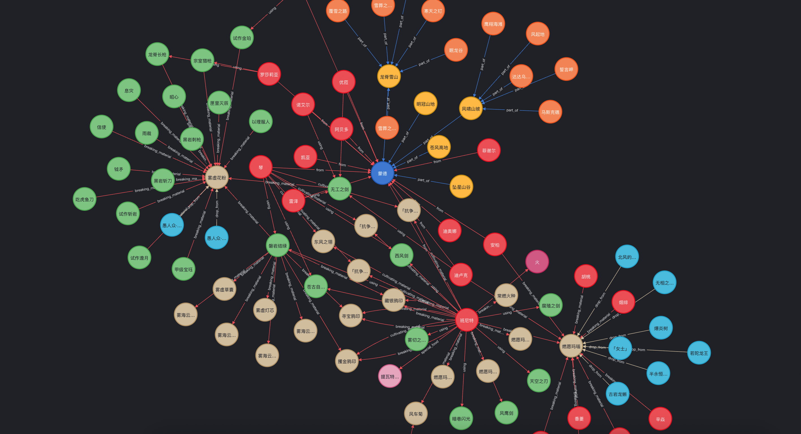
2.4 素材与数据的导入导出
| 能力 | 输入 | 输出 |
|---|---|---|
| 素材导入 | zip 素材包或目录（见下方布局约定） | 并入 assets.db，为新人物登记默认帧率/缩放，托盘菜单即时出现 |
| 素材导出 | assets.db |
还原为 png/ + music/ 目录，或打包为 zip（ZIP_STORED），能被现有导入器直接并回 |
| 配置导入导出 | config.db |
JSON 文件（v3.8 起只认 JSON；导入 .yaml 会明确报错并提示另存为 .json） |
| 图谱导入导出 | kg.db |
label-<类型>.csv / rel-<源类型>-<目标类型>.csv，导出目录可整目录回灌 |
| 备份迁移 | — | 三个 .db 文件即全部状态，直接复制即可迁移到其他机器 |
素材包约定目录布局（导入器与导出器严格对称）：
素材包/
png/<人物>/*.png # 人物帧（逐帧 PNG）
music/<人物>/*.mp3 # 人物语音，按 早上好/中午好/晚上好/晚安/闲聊*/想要了解* 命名自动分类
music/<地区>/background.mp3 # 地区背景音乐（目录含 background.mp3 即识别为地区）
2.5 内置内容清单
28 位内置人物：七七、优菈、八重神子、刻晴、可莉、夜兰、宵宫、早柚、枫原万叶、珊瑚宫心海、 班尼特、琴、甘雨、神里绫人、神里绫华、胡桃、芭芭拉、荒泷一斗、莫娜、菲谢尔、行秋、达达利亚、 迪卢克、迪奥娜、钟离、阿贝多、雷电将军、魈。
3 个内置背景音乐地区：蒙德、璃月、稻妻。
config.db的frame_scale表里实际有 30 行——多出的「万叶」「心海」是早期未写全名时留下的历史别名。 这是有意的：登记表与资源库故意解耦，登记项可以多于实际资源（人物被删除后登记项不自动清）， 这样删人物再导入素材不会丢掉用户调好的帧率与缩放。
三、系统架构
3.1 分层总览
系统按「表现层 / 交互层 / 存储层 / 构建层」四段划分，依赖方向严格自上而下—— UI 不写 SQL，存储层不知道 Qt 存在。
┌──────────────────────────────────────────────────────────────┐
│ 表现层 pilot.Pilot manager_panel.ManagerPanel │
│ · QMainWindow + QSystemTrayIcon · 独立 QMainWindow │
│ · QTimer 驱动帧动画 · QTabWidget 六页 │
│ · QMenu + QAction 命令菜单 · 持有 pilot 引用 │
└───────────┬──────────────────────────────────┬───────────────┘
│ │
┌───────────▼──────────────────────────────────▼───────────────┐
│ 交互层 kg_view.KGCanvas / NodeItem kg_editor.*Dialog │
│ · QGraphicsView 自我中心网（懒展开） · EntityPicker 补全选择 │
│ · 纯展示，无任何写操作 · Node/EdgeEditDialog │
└───────────┬──────────────────────────────────────────────────┘
│
┌───────────▼──────────────────────────────────────────────────┐
│ 存储层（三库并列于程序目录 BASE_DIR，均为 SQLite） │
│ resource_store.ResourceStore → assets.db （帧/语音/BGM） │
│ config_store.ConfigStore → config.db （用户设置） │
│ kg_store.KGStore → kg.db （节点/关系） │
│ asset_importer / asset_exporter（跨库：素材 ↔ 配置联动） │
└───────────┬──────────────────────────────────────────────────┘
│ 仅构建期使用（不随包分发）
┌───────────▼──────────────────────────────────────────────────┐
│ 构建层 tools/build_assets_db.py · tools/build_databases.py │
│ data/csv/*.csv + data/config.json ──▶ 三个 .db │
│ res/help.html（外置帮助页）· ico/*.ico │
└──────────────────────────────────────────────────────────────┘
运行时只读三个 .db，彻底不读 CSV/JSON（已实测删掉整个 data/ 目录功能完整）。
CSV/JSON 降级为本地构建输入，只服务于「造出厂库」这一件事。
3.2 仓库目录结构
Pilot-KG-Genshin/
├── pilot.py 主程序（入口，含托盘菜单与动画主循环）
├── manager_panel.py 管理面板（QMainWindow 主窗口，任务栏独立图标）
├── resource_store.py 资源访问抽象层（优先 assets.db，回退文件系统）
├── config_store.py 配置存储层（config.db 持久化 + 导入导出）
├── asset_exporter.py 素材导出（assets.db → png/ 与 music/ 目录或 zip）
├── asset_importer.py 第三方素材包导入核心
├── kg_store.py 知识图谱存储层（kg.db 持久化 + CSV 导入导出 + 增删改）
├── kg_editor.py 知识图谱编辑对话框（实体属性表 / 关系两端选择）
├── kg_view.py 知识图谱可视化组件（自我中心网画布）
├── assets.db 资源数据库（由 tools/build_assets_db.py 构建）
├── kg.db 知识图谱数据库（由 tools/build_databases.py 构建）
├── config.db 出厂配置 + 用户本机设置（同一文件）
├── data/ ⚠️ 仅构建输入：既不入 git、也不随安装包分发
│ ├── config.json 出厂配置种子（构建 config.db 用，v3.8 起为 JSON）
│ ├── csv/ 原神知识图谱初始 CSV（27 个，构建 kg.db 用）
│ ├── csv-edu/ 教育 / AI 领域知识图谱初始 CSV（9 个）
│ ├── png/、music/ 原始素材目录（打包进 assets.db 后可不分发）
│ └── apng/、bgm/、spider-data/ 采集脚本的中间产物
├── res/
│ └── help.html 帮助文档（v3.8 外置，启动时动态读取）
├── ico/ 图标（icon256.ico / .bmp、app_icon.ico、logo.ico）
├── 桌面伙伴-Pilot.spec PyInstaller 打包配置
├── setup.iss Inno Setup 安装脚本（三处版本号同步点之一）
├── tools/ 构建、命令行与数据采集工具（17 个）
├── tests/ pytest 测试（18 个文件）
├── exhibition/ 各版本的项目详细介绍与配图
├── doc/ 部署说明、重构日志、知识图谱设计稿
...
data/整个目录不入 git（含 36 个知识图谱 CSV 与配置种子），新克隆需自行补齐—— 但它同时是打包的硬依赖，详见第九章。
3.3 模块职责
| 模块 | 行数 | 职责 |
|---|---|---|
pilot.py |
684 | 主类 Pilot：托盘、帧缓存、问候、音频、拖动、快捷键、单实例互斥量 |
manager_panel.py |
1570 | 六标签页管理面板、素材/配置/图谱的导入导出编排、帮助页加载 |
kg_store.py |
1444 | 图谱存储：SQLite 持久化 + 内存节点表/邻接表 + CSV 导入导出 + 节点关系编辑 |
kg_view.py |
496 | QGraphicsView 自我中心网画布（纯展示，不含写操作） |
kg_editor.py |
348 | 实体选择器与实体/关系编辑对话框 |
config_store.py |
399 | 配置存储：JSON 种子播种、kv + frame_scale 表、数值夹紧、JSON 导入导出 |
resource_store.py |
194 | 资源访问抽象层：优先 assets.db，回退文件系统；只暴露字节流与名称列表 |
asset_importer.py |
120 | 素材包（目录 / zip）→ assets.db upsert + 新人物登记 |
asset_exporter.py |
107 | assets.db → png/ + music/ 目录或 zip（与导入器严格对称） |
3.4 数据流
① 素材导入（跨两个库）
zip / 目录
│ asset_importer._extract_if_zip 解压到临时目录
▼
tools.build_assets_db.iter_assets 遍历并分类（frame / voice / bgm，语音按关键词归类）
│ INSERT OR REPLACE upsert
▼
assets.db ──────► config_store.register_role() 新人物补默认 [60ms, 1.0]
│
▼
Pilot.import_from_path → 内存 config 重新 load → _rebuild_role_menu()
→ 托盘菜单即时出现新人物
② 动画播放（性能关键路径）
QTimer.timeout ──► Pilot.act() 索引 +1 取模
│
▼
self._frames[i] ← 已在切换人物时全量预解码 + 预缩放 + 预 mask
│
▼
resize → setMask → setPixmap （顺序不能颠倒，见 4.9）
切换人物时一次性付清解码成本（219 帧约 0.5 s），动画期间磁盘 I/O 与重复解码降为 0。
③ 知识图谱编辑
kg_editor 对话框（只改内存字段）
│ 点确定后由调用方落库
▼
KGStore.add_node / update_edge_touching … with self._conn: ← 块退出即 commit
│
▼
kg.db ──► _reindex() 重建内存节点表与邻接表（2600 节点 / 8400 边，毫秒级）
│
▼
KGCanvas.show_ego() 重新绘制自我中心网
3.5 三库 schema
-- assets.db：单表存全部二进制资源（按 role + kind 建索引，列出某人物的帧只需走索引）
CREATE TABLE assets (
role TEXT NOT NULL, -- 角色名，或地区名（蒙德/璃月/稻妻）
kind TEXT NOT NULL, -- frame / voice / bgm
name TEXT NOT NULL, -- 原始文件名
category TEXT, -- 语音分类：greeting/chat/know
data BLOB NOT NULL,
PRIMARY KEY (role, kind, name)
);
CREATE INDEX idx_assets_role_kind ON assets(role, kind);
-- kg.db：节点 + 有向边（含权重）+ 中文名登记表 + 元信息
CREATE TABLE kg_nodes (
type TEXT NOT NULL,
name TEXT NOT NULL,
attrs TEXT NOT NULL DEFAULT '{}', -- attrs 为 JSON
PRIMARY KEY (type, name)
);
CREATE TABLE kg_edges (
id INTEGER PRIMARY KEY AUTOINCREMENT,
src_type TEXT NOT NULL,
src_name TEXT NOT NULL,
rel TEXT NOT NULL,
dst_type TEXT NOT NULL,
dst_name TEXT NOT NULL,
weight REAL, -- v3.5 起支持关系权重
UNIQUE (src_type, src_name, rel, dst_type, dst_name)
);
CREATE TABLE kg_rel_names (rel TEXT PRIMARY KEY, cn TEXT NOT NULL); -- 关系中文名单独立表
CREATE TABLE kg_type_names (type TEXT PRIMARY KEY, cn TEXT NOT NULL); -- 类型中文名持久化
CREATE TABLE kg_meta (key TEXT PRIMARY KEY, value TEXT); -- schema_version 等
-- config.db：标量项 + 人物帧率表 + 元信息
CREATE TABLE kv (key TEXT PRIMARY KEY, value TEXT); -- 标量项 JSON 编码
CREATE TABLE frame_scale (role TEXT PRIMARY KEY, interval INTEGER, scale REAL);
CREATE TABLE config_meta (key TEXT PRIMARY KEY, value TEXT); -- 播种来源 + schema_version
kg.db 与 config.db 都带 schema_version（分别为 3 与 1），为后续「服务端下发同格式数据」的
C/S 预留——结构版本不匹配时应拒绝导入而非静默出错。
kg_edges 的 weight 由 _migrate() 用 PRAGMA table_info 探测后 ALTER TABLE 补列：
CREATE TABLE IF NOT EXISTS 不会给已存在的表加列，这是老库升级时最容易漏掉的一步。
解析侧支持 8 / 0.85 / 8/10 / 8,5 / 1,000 多种写法，非法值退回默认而不丢边。
3.6 三个库的双重身份
kg.db 与 config.db 既是出厂产物，又是用户本机状态：程序里新增的图谱实体、
改过的名字、调好的帧率缩放都在里面。因此：
- 构建脚本默认不覆盖：
tools/build_databases.py不加--force时只检查不重建 （--force会自动备份为*.db.bak-<时间戳>）； - 安装器用
onlyifdoesntexist安装：setup.iss的recursesubdirs复制_internal\*时把这两个库写进Excludes，再各自单独安装—— 否则升级一次就把用户编辑的图谱和设置清空； - 恢复出厂：删掉
config.db/kg.db后重装即可（面板因此不提供 「恢复出厂设置」按钮，避免误触）。
3.7 存储层的两条重要约定
① 内存索引加速 + 写后重建。 KGStore 以 SQLite 为准（唯一真身），
同时在内存维护 nodes 节点表、_name_index 名称索引、adj 邻接表、_edges 三元组集合。
查询走内存、写入落库后调 _reindex() 全量重建（2600 节点毫秒级，代价可接受，
换来的是不必维护增量一致性的复杂逻辑）。
② 导入必须单事务 + 事务内局部名称索引。 导入上千行 CSV 时，
self._name_index 在事务中不会刷新，因此必须在事务内维护一份局部索引，
否则本批新建的实体无法被后续关系解析。
一条容易忽略的顺序依赖：
adj是双向邻接表（入边出边都塞进去），所以它分不出方向。 需要方向时用neighbor_details_directed()（返回时带'out'/'in'标记）， 或直接回self._edges查三元组的实际存储方向。
四、设计模式与工程实践
下面按「模式 → 在本项目中的具体落点 → 为什么这么用」列出。 其中部分模式是 GoF 经典模式，部分是为桌面应用形态做的显式取舍。
4.1 单例（Singleton）——模块级懒加载
kg_store.py 与 config_store.py 各有一份默认库单例：
_default = None
def get_default_store(base_dir=None, seed_dir=None, reset=False):
global _default
if _default is not None and not reset:
return _default
_default = KGStore(os.path.join(base_dir, 'kg.db'), seed_dir=seed_dir)
return _default
为什么需要：面板、图谱页、素材页都要访问图谱库。Qt 的信号槽是同步的，
若各处 KGStore(db_path) 各开一个连接，就会出现「一处写完、另一处索引还是旧的」。
单例保证全进程一份内存索引，跨窗口天然一致。
同时提供 reset_default_store() 供测试与「重载」丢弃实例——单例不等于不可回收。
4.2 存储抽象 / 后端策略（Strategy）+ 仓储（Repository）
ResourceStore 是唯一的资源入口，它在构造时决定后端：
if os.path.isfile(self.db_path):
self._conn = sqlite3.connect(self.db_path, check_same_thread=False)
self.backend = 'sqlite'
else:
self.backend = 'filesystem'
上层（Pilot）只调 list_frames / read_frame / list_voices / read_bgm，
拿到的是字节流和名称列表，完全不关心底层是数据库还是目录。
为什么需要：开发期素材是零散的 png/ music/ 目录（近万个文件），
发布形态是单个 assets.db（461 MB）。两种形态必须都能跑，且上层代码一行不改。
这个「无数据库时回退文件系统」的能力让开发与发布可以各自选形态，
也让资源库缺失时的报错信息能明确指向补救方式。
三个存储类（ResourceStore / ConfigStore / KGStore）都遵守同一条纪律：
UI 不写 SQL，存储层不知道 Qt 存在。它们是三个独立的仓储，
各自拥有自己的 schema、播种策略与导入导出格式。
4.3 外观（Facade）与唯一入口收口
Pilot 是整个应用的外观门面，但更值得注意的是它把若干类操作收口到单一方法：
Pilot.set_visible(visible)是伙伴显隐的唯一入口。 托盘「显示」、桌面右键「隐藏」、 面板勾选项三者都走它；它末尾回调panel._sync_window_state()同步勾选状态。 v3.8 曾出现过的真实缺陷正是绕过它——从托盘隐藏伙伴后面板仍显示「已勾选」。Pilot.save_config()是配置落库的唯一入口，切换人物后立刻落库而不是等退出时保存， 这样程序被强杀下次启动仍是刚才那个人物。_sync_window_state()是面板状态同步的唯一入口， 由changeEvent与set_visible共同调用，保证「按钮文案 / 勾选 / 状态标签」三者不打架。
为什么重要：这是本项目踩过坑之后总结出的规则。多入口必然出现状态漂移， 而状态漂移是最难复现的一类 bug。收口到一处后，「哪些地方会改这个状态」永远可列举。
4.4 观察者（Observer）——Qt 信号槽
Qt 的信号槽机制本身就是 GoF 观察者的实现，项目中用它解耦了三处：
| 信号 | 槽 | 解耦了什么 |
|---|---|---|
QTimer.timeout |
Pilot.act |
定时器不关心谁在画帧 |
KGCanvas.nodeSelected / nodeExpanded |
面板填详情 / 重新展开 | 画布（纯展示）完全不知道面板的存在 |
tabs.currentChanged |
_ensure_kg_loaded |
懒加载挂在导航事件上，不需要额外的“加载”按钮 |
completer.activated |
补全回填 | 见 4.9，这是个踩过坑的观察者 |
4.5 模板方法（Template Method）——导入 / 导出的固定骨架
import_assets 与 export_assets 是同一骨架的镜像：
① 归一化输入（zip 解压 / 目录原样） → ② 遍历并分类 → ③ 写库或写文件 → ④ 报告
归一化那一步用 zipfile.is_zipfile(src) 判定并返回 (实际目录, 临时目录对象)，
调用方用 try/finally 统一 tmp.cleanup()——分支只发生在第一步，
后面的流程对两种输入完全一致。
导出器则与导入器严格对称：png/<角色>/、music/<角色>/、
music/<地区>/background.mp3 三条布局约定两边一致，
保证「导出的包能被现有导入器直接并入」。这是刻意的：导出不是备份，是可逆操作。
4.6 空对象（Null Object）与静默兜底
多处「拿不到就退一步」的容错，构成事实上的空对象策略：
| 场景 | 兜底行为 |
|---|---|
| 配置种子文件缺失 / 损坏 | 静默退回内置 DEFAULTS，绝不抛异常（json.JSONDecodeError 全捕获） |
res/help.html 缺失 |
返回兜底提示页，面板照常打开 |
| 人物没录某时段问候语音 | 按降级顺序换关键词，全都没有就静默跳过 |
| 语音文件播放失败 | 捕获 RuntimeError 打印一行，不影响程序运行 |
| 磁盘图标缺失 | 退回当前伙伴的首帧当窗口图标 |
| 关系无中文名登记 | 回退静态 REL_NAMES，再回退英文原文，不报错也不吞掉 |
原则：程序永远能启动。所有外部输入（种子文件、素材包、用户导入的配置） 都视为不可信，解析失败时退回内置状态并留日志，而不是抛栈给用户看。
4.7 缓存（Cache）与写时失效
KGStore 的内存索引（4.2 已述）与 Pilot._frames 帧缓存是同一思路的两处应用：
- 帧缓存：切换人物时全量解码 + 预缩放 + 预生成
mask，动画期间零磁盘 I/O； 缩放变化（Ctrl + ↑/↓或面板改缩放）时整体重建。 - 索引缓存：查询全走内存，写入后
_reindex()全量重建—— 宁可重算 2600 个节点，也不去维护「增量更新邻接表」这类易错逻辑。
4.8 组合优于继承
v3.8 把管理面板从 QDialog 升级为独立 QMainWindow，
并显式断开 Qt 父子关系：构造时 super().__init__(None)，
伙伴改由 self.pilot 属性引用。
这不是洁癖，是任务栏行为的硬约束：把 pilot 当 Qt 父窗口，
Windows 会把面板并进伙伴那个 Qt.Tool 窗口的任务栏分组，
任务栏上根本找不到面板。反过来伙伴本体加 Qt.Tool
（映射为 WS_EX_TOOLWINDOW）才让「桌面上只有一个托盘图标」成立。
面板关闭时 closeEvent 只做 event.ignore() + hide()，不销毁实例——
已填的表单与已加载的图谱要保住；真正的销毁只发生在 Pilot.quit() 里。
这里同时踩过一个坑：早期版本在 closeEvent 里调 pilot.on_manager_closed() 把 _panel 置空，
导致下次打开新建实例、旧实例泄漏——Qt 父子关系与 Python 引用是两套生命周期，不能混用。
4.9 适配器（Adapter）：向 Qt 的缺陷妥协
几处 Qt / PySide6 不顺手的地方，用适配层包住，不让缺陷扩散到业务代码：
| Qt 的问题 | 适配做法 |
|---|---|
QCompleter.activated 有 QString 与 QModelIndex 两个重载，PySide6 不限定类型时只连得上前者 |
连接处用 signal[Type] 限定，或干脆不依赖信号参数，改从 completer.currentIndex() 反查 |
setMask 会把窗口 minimumSize 顶到遮罩尺寸，后续 resize 被 Qt 静默忽略 |
统一走 _apply_frame()：resize → setMask → 显式 setMinimumSize(0, 0) |
setWindowFlags 会重置窗口几何，先 setGeometry 会被丢弃 |
窗口属性必须设在定位之前 |
QGraphicsItem 默认鼠标处理会 grabMouse()，对象被 scene.clear() 销毁后 Qt 报 ungrabMouse |
NodeItem 只响应「按下」，拖拽交给 QGraphicsView 的 ScrollHandDrag |
emit 是同步的，槽里销毁场景会让 super() 抛 Internal C++ object already deleted |
_retire_items() 主动置 _alive=False，重绘前置 False，事件开头检查即 return |
QColor 解析不了 CSS hsl(...)（isValid() 为 False，静默渲染成黑点） |
自动配色只存色相角，实际颜色由 _auto_color() 转成 #RRGGBB 后再入库 |
4.10 数据驱动的注册表（Registry）
实体类型、关系中文名、按钮尺寸这类元数据，全部收敛为模块级字典常量，
而不是散落在 if/elif 里：
NODE_TYPES = {'character': ('人物', '#e74c3c'), 'weapon': ('武器', '#8e44ad'), ...}
REL_NAMES = {'part_of': '属于', 'artifacts_is': '圣遗物', ...}
BTN_W, BTN_H = 132, 32
收益是新增一类实体只需加一行：图谱页的类型下拉、画布配色、详情页展示、
编辑器输入框会自动跟上。代价是要克制——REL_NAMES 里没有的关系
（用户自建的）显示时回退为原文，而不是报错或吞掉。
NODE_TYPES 还是个可增长注册表：register_type() 幂等且自动分配配色，
新增类型的中文名取该类型 label_cn / category 列的众数——
统计必须放在解析整张表的过程中，所以注册动作只能在 _parse_node_file 内部做。
手工路径的 add_node() 对未知类型仍然报错（打错字要当场拦住），自动注册只走导入路径。
同理，GREETING_SCHEDULE + GREETING_FALLBACKS 把「几点说什么话」
变成一张纯数据表，覆盖全天 24 小时（含跨零点区间），
并为每个时段定义降级顺序——新增时段不需要改代码：
GREETING_SCHEDULE = (
((23, 5), '晚安'), # 23:00~04:59（跨零点）
((5, 11), '早上好'), # 05:00~10:59
((11, 15), '中午好'), # 11:00~14:59
((15, 23), '晚上好'), # 15:00~22:59
)
4.11 命令（Command）与动态菜单
托盘菜单用 QAction + lambda 承载命令，菜单项由资源库动态生成：
def _rebuild_role_menu(self):
self.partners.clear()
available = set(self.store.list_roles())
ordered = [r for r in config['frame_scale'] if r in available] # 登记过的排前
ordered += sorted(available - set(ordered)) # 其余按字典序
for role in ordered:
act = QAction(role, self)
act.triggered.connect(lambda checked=False, r=role: self.reshow(r))
self.partners.addAction(act)
选中态用文案后缀（"璃月～"）而非勾选标记表达——托盘菜单是扁平结构，
后缀方案不需要额外维护 checked 状态，且点击时能从文案反推意图
（set_audio 收到带「～」就意味着“取消选中”）。

五、界面与交互细节
5.1 托盘菜单：程序的唯一入口
程序启动后常驻系统托盘，没有主窗口，所有操作都从托盘图标右键菜单进入。 菜单结构极简：人物（动态生成）/ 音乐 / 管理面板 / 显示 / 退出。 右键桌面上的伙伴窗口可直接隐藏它；隐藏后随时可从托盘「显示」唤回。
5.2 管理面板六个标签页
素材管理页是四个独立分组（导入素材 / 导出素材 / 配置文件 / 知识图谱数据），
不合并——图谱 CSV 的导入导出与重载放在这里，图谱页顶部只留提示文字。
所有页面按钮统一 132×32（需 setFixedSize，只加 addStretch 会被默认
sizePolicy 拉伸成等宽，文字长短仍导致观感不齐）。
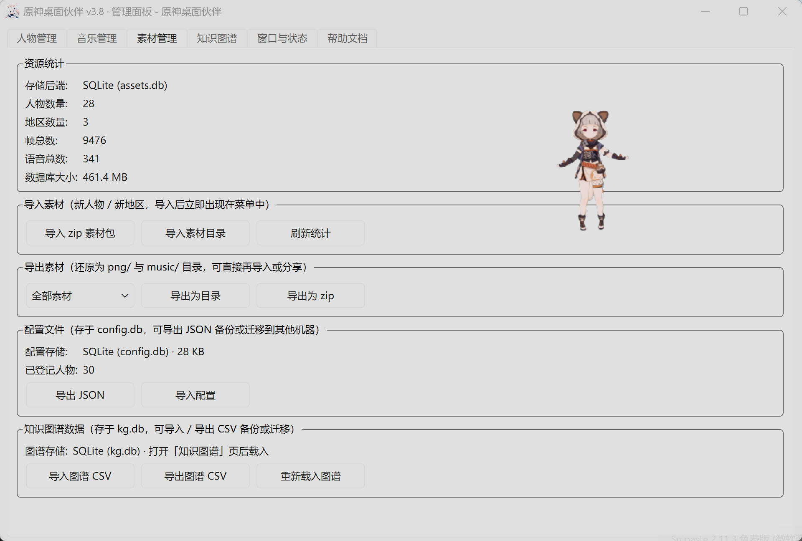
人物管理：左侧列表 + 首帧预览 + 帧数/语音数/状态 + 播放设置。
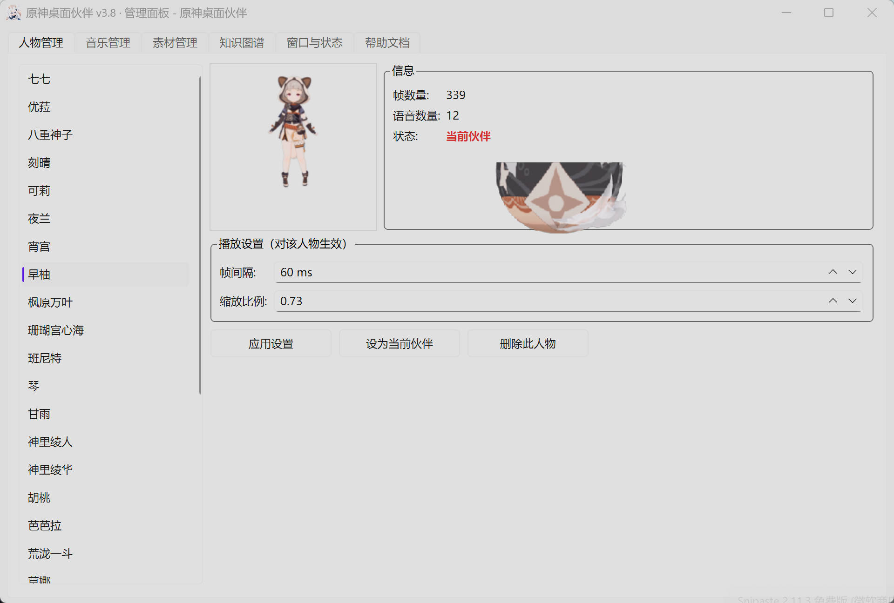
音乐管理：与托盘菜单「～」状态双向同步。
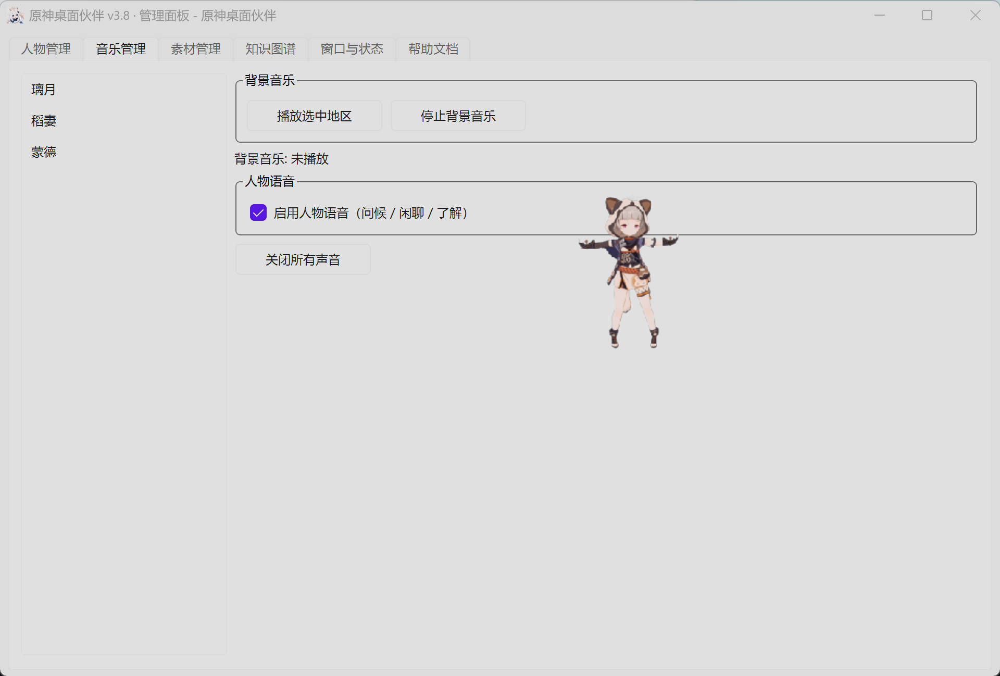
窗口与状态（v3.8 新增）：上半窗口命令按钮 + 勾选框，下半状态标签。 显隐用勾选框而非按钮——它是状态不是动作。
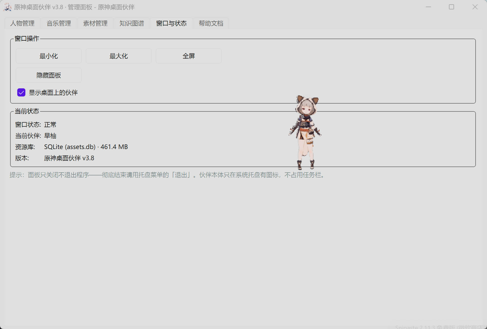
帮助文档：外置的 res/help.html，启动时读取并替换版本号与仓库地址占位符。
占位符必须用双花括号（文件里有 CSS，单花括号会把样式整段吃掉）。
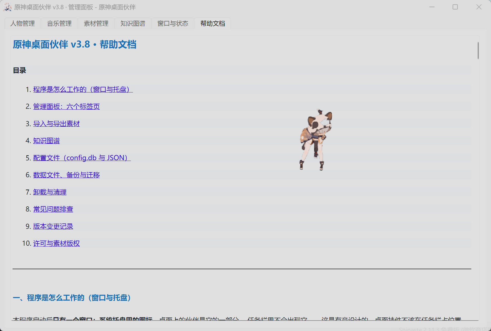
Ctrl+1 ~ Ctrl+6 切换标签页，必须在所有标签页建好之后绑定
（快捷键按索引定位，少建一个页就会绑到错位的页面上）。
5.3 知识图谱交互
实体检索 → 自我中心网；单击看详情、双击展开、滚轮缩放、拖拽平移。 右侧可直接编辑实体与关系，关系编辑支持方向翻转与两端实体补全。
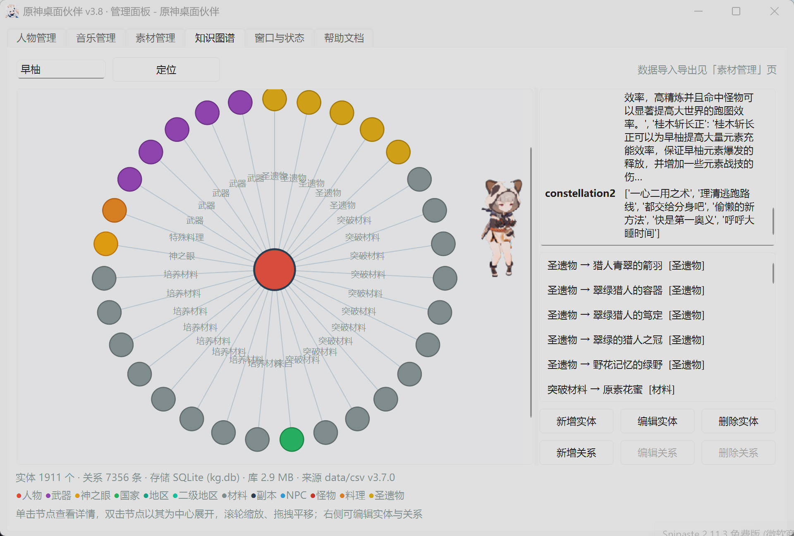
关系编辑对话框，两端实体均可搜索补全，也可直接输入新名字：
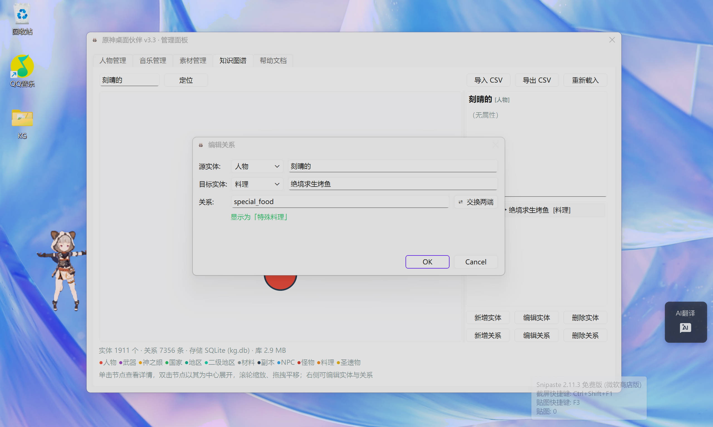
实体名补全下拉（按类型分组显示）：
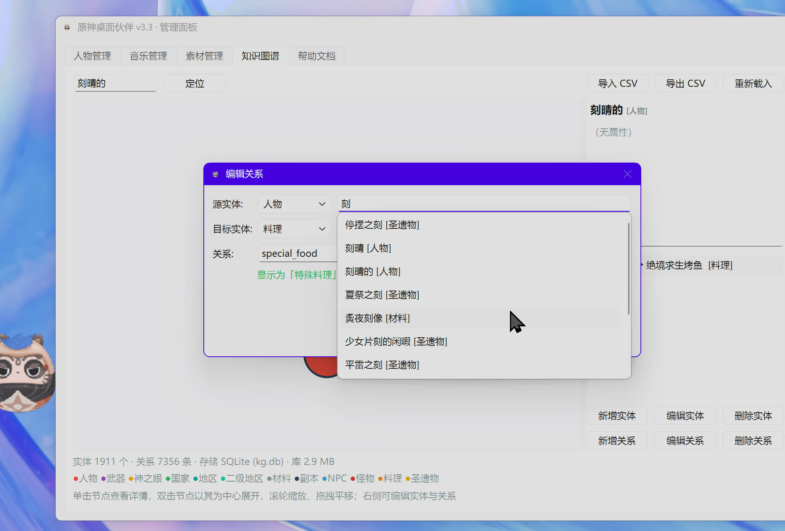
删除实体时会明确告知连带删除的关系条数：
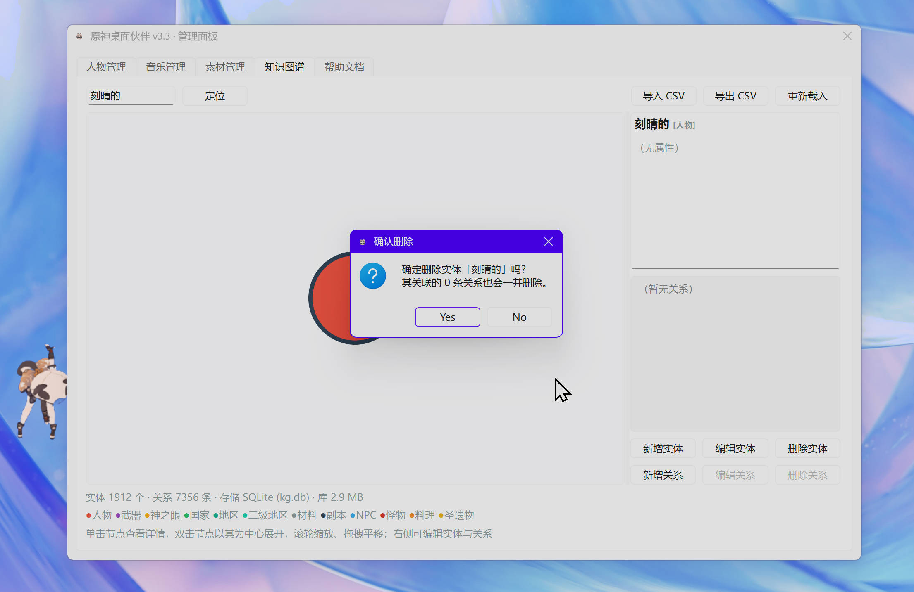
画布细节：中心节点半径 26px、邻居 15px，仅中心节点的边标注关系名（避免文字堆叠）。
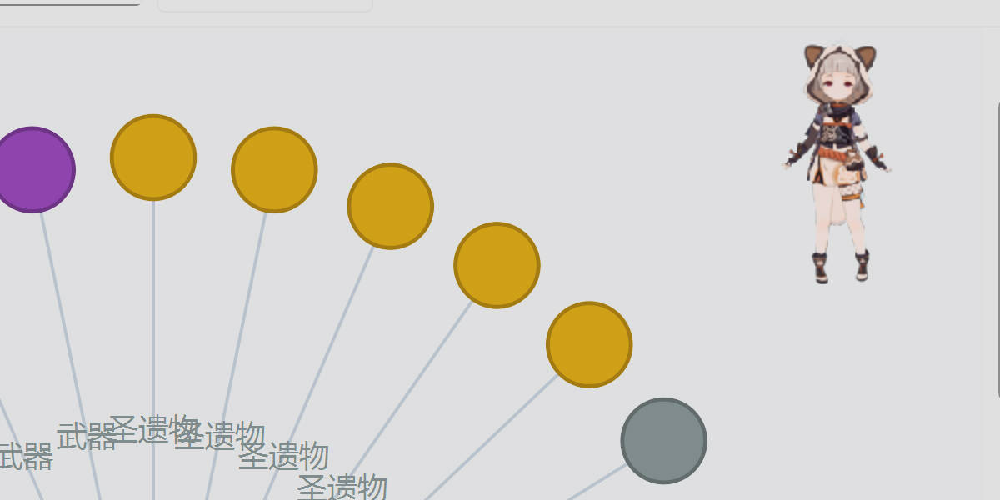
方向无关的 UI：可视化是无向遍历，UI 并不知道三元组的存储方向，
因此 update_edge_touching / delete_edge_touching 会自动识别存储方向。
这条约定让界面层不必关心数据层的方向细节。
5.4 快捷键
| 系统 | 缩放人物 | 退出 | 面板切页 |
|---|---|---|---|
| Windows | Ctrl + ↑ / Ctrl + ↓ |
Ctrl + Q |
Ctrl + 1 ~ Ctrl + 6 |
| macOS | Command + ↑ / Command + ↓ |
Command + Q |
同上 |
全屏状态下 Esc 退出全屏——全屏会盖住全部界面，没这个出口用户会被困住。
六、构建与发布链路
6.1 流水线
data/csv/*.csv + data/csv-edu/*.csv ──[tools/build_databases.py]──► kg.db
data/config.json ───────────[tools/build_databases.py]──► config.db
png/ + music/ ───────────[tools/build_assets_db.py]──► assets.db
│
PyInstaller（onedir）
▼
dist/桌面伙伴-Pilot/（exe + _internal）
│
Inno Setup 6（ISCC）
▼
inno_build/桌面伙伴-Pilot安装向导.exe
安装包 = 程序 + 三个 .db + 图标 + res/help.html，不含任何 CSV / YAML / JSON。
已实测删除整个 data/ 目录后运行时功能完整。
6.2 安装器要点

- 每用户目录安装（
%LOCALAPPDATA%\Programs），免管理员权限—— 因为程序运行时要写config.db、导入素材要写assets.db，装进Program Files会因权限不足写失败； - 安装界面提供「仅为我安装 / 为所有用户安装」两种模式，默认前者；
- 安装时可选勾选创建桌面图标与开机自启（默认均不勾选）；
config.db/kg.db以onlyifdoesntexist安装，升级不覆盖用户数据；[UninstallRun]先 taskkill 结束运行中的程序（否则文件被占用删不掉），[UninstallDelete]删除整个{app}（含运行期产生的文件），[InstallDelete]清旧版残留；卸载时可选择保留用户数据到%APPDATA%；AppMutex与pilot.APP_MUTEX_NAME必须是同一个字符串（写在两处，由测试锁住一致）， 不一致时安装器判断不出程序在运行 → 文件被占用 → 卸载失败。

6.3 构建陷阱备忘
| 陷阱 | 表现 | 对策 |
|---|---|---|
PyInstaller --clean 的清缓存步骤可能被安全策略静默拦截 |
复用旧 Analysis 缓存，新模块不进包，构建看上去是成功的 | 打包命令不写 --clean，改为每次手动清理 build/、dist/ 与 %LOCALAPPDATA%\pyinstaller；打包后校验 PYZ-00.toc 模块清单与 _internal 数据 |
build_databases.py 加 --force |
用 CSV/JSON 静默覆盖用户本机状态，表现为「新安装包里还是旧数据」 | 日常不加 --force；确需重建会自动备份 |
| 产物 exe 的运行时 stderr 问题 | 崩溃 / Qt 警告只在运行时输出，查文件查不出来 | 产物 exe 离屏跑 25 秒，输出应为空——比静态校验更硬 |
⚠️ 打包时不要给
build_databases.py加--force：kg.db/config.db既是出厂产物 又是用户本机状态（新增的图谱实体、改过的名字、调好的帧率缩放都在里面），--force会用data/csv、data/config.json静默覆盖它们。 日常直接跑build_databases.py即可——库已存在时它只检查不重建。
七、版本演进
| 版本 | 主要变化 |
|---|---|
| v1.x | 基础桌面伙伴：人物切换、拖动、隐藏、时段问候、语音与地区背景音乐 |
| v2.0 | SQLite 资源库 + 帧缓存；第三方素材包导入；全新每用户目录安装包 |
| v2.1 | 新增管理面板（人物/音乐/素材/帮助文档），设置变更即时保存 |
| v3.0 | 知识图谱可视化上线（管理面板「知识图谱」页） |
| v3.1 | 全局更名：「桌面宠物」→「桌面伙伴」，Pet → Pilot，入口脚本 desktoppet.py → pilot.py |
| v3.2 | 文档全面完善；仓库迁移至 Pilot-KG-Genshin；帮助页新增管理面板使用说明 |
| v3.3 | 知识图谱改为数据库存储（kg.db），新增 CSV 导入导出与节点 / 关系编辑 |
| v3.4 | 目录重构（src/ → ico/、GenshinKG/data/ → data/csv/、GenshinKG/utils/ 并入 tools/）；配置改用 SQLite（config.db）管理 |
| v3.5 | 数据一律由 SQLite 管理：安装包只带三个 .db，CSV/JSON 降级为构建输入，运行时彻底不读；两库新增 schema_version 与来源元信息；图谱边支持权重 |
| v3.6 | 新增素材导出；修复人物切换后被拽回左上角 / 尺寸不跟随 / 大缩放出屏；修复问候语音分类与 7 小时静默；移除「恢复出厂设置」按钮 |
| v3.7 | 修复「重新构建后图谱编辑丢失」（--force 覆盖本机状态）；切换人物时按时段问好；图谱导入导出移到素材页；按钮尺寸统一；修复补全崩溃、画布警告、托盘图标警告 |
| v3.8 | 面板升级为独立主窗口并新增「窗口与状态」页；伙伴本体改 Qt.Tool 不再占任务栏；显隐状态双向同步；配置全面改用 JSON（移除 PyYAML）；帮助文档外置为 res/help.html；知识图谱改动即时落盘并受升级保护；卸载更干净；启动单实例 |
| v3.8.1~3 | 关系 / 权重 / 类型中文名的持久化补齐；实体表头统一为 name / name_cn / label / label_cn；kg.db 合并教育 / AI 领域数据（data/csv-edu） |
几个改动最重的版本，展开说明：
- v3.5 是地基。它把「运行时读 CSV」改成「运行时只读
.db」，CSV/JSON 降级为构建输入。 实测删掉整个data/目录后功能完整。这一步为后续 C/S 架构预留了空间—— 将来服务器下发同格式数据，客户端用现成的导入接口入库即可。 - v3.7 修的是一个很典型的坑：打包时用了
build_databases.py --force， 会用 CSV 覆盖kg.db——而用户的图谱编辑就在这个库里，于是表现为「重新构建后编辑丢失」。 现在日常打包不加--force，且--force会自动备份为*.bak-<时间戳>。 - v3.8 的改动大多是「窗口状态」与「数据安全」：面板从
QDialog升为独立QMainWindow并新增「窗口与状态」页；伙伴本体改用Qt.Tool让任务栏不再出现空占位按钮； 配置导入导出从 YAML 全面迁到 JSON 并移除 PyYAML 依赖； 帮助文档外置为res/help.html；修掉了「升级安装会无条件覆盖kg.db」这个真实的数据丢失问题； 卸载向导重做（结束进程 + 删整目录 + 可选保留数据），并新增AppMutex让卸载能可靠识别运行中的实例。
八、技术栈与许可
| 组件 | 用途 | 许可证 |
|---|---|---|
| PySide6 | 窗口、托盘、面板、图谱画布等全部 GUI | LGPLv3 |
| pygame-ce | 语音与背景音乐播放（mixer） |
LGPLv2.1 |
| SQLite（Python 内置） | 资源 / 配置 / 图谱三个数据库 | Public Domain |
| pytest | 自动化测试（开发依赖） | MIT |
| PyInstaller | 打包工具 | GPL（打包产物不受限） |
| Inno Setup | 安装向导生成 | Inno Setup License |
| uv | 依赖与虚拟环境管理 | Apache-2.0 / MIT |
v3.8 起 PyYAML 已从依赖中移除——配置文本格式统一为 JSON， 运行时依赖只剩 PySide6 与 pygame-ce 两项。
素材版权
游戏图像、语音等素材版权归上海米哈游网络科技股份有限公司所有， 本项目仅供学习交流，请勿用于商业用途。绿幕素材来源于 B 站 UP 主「皮皮虾米锅巴」。
本项目源码以 Apache License 2.0 开源（详见 LICENSE）。
参与贡献与致谢
- 原项目：fg0521/Genshin-Impact-Desktoppet—— 本项目由它迭代而来，「桌面宠物」的原始形态来自这里；
- 绿幕素材来源于 B 站 UP 主「皮皮虾米锅巴」；
- 知识图谱的数据与设计参考仓库内的
data/csv/、data/csv-edu/目录及doc/知识图谱.jpg； - 领域预训练模型参考 GenshinBert。
九、安装、运行与开发
9.1 源码运行
A：终端路线
- 克隆并进入目录，安装依赖：
git clone https://github.com/MrYuPengfei/Pilot-KG-Genshin.git
cd Pilot-KG-Genshin
uv sync
-
补齐
data/目录——它不在 git 里。装一次桌面伙伴， 从「管理面板 → 素材管理 → 导出素材」把素材与图谱 CSV 导出来放回data/； 或直接用网盘分享里的知识图谱数据。 -
构建三个数据库（安装包只带 SQLite 库与
help.html，不含 CSV/JSON 配置——它们是构建输入）：
uv run python tools/build_databases.py # 生成 kg.db 与 config.db
uv run python tools/build_assets_db.py # 生成 assets.db（可选，无库时回退读目录）
克隆后的仓库里这三个库都不存在（已入
.gitignore），必须先构建。
- 运行：
uv run python pilot.py # 前台运行
nohup python -u pilot.py >pet.log 2>&1 & # 后台运行，不用一直开着终端
也可以在 PyCharm 等编辑器里直接右键运行 pilot.py。
B：Windows 安装包路线（免环境）
直接运行「桌面伙伴-Pilot安装向导.exe」即可，安装到用户目录（%LOCALAPPDATA%\Programs），
无需管理员权限与 Python 环境。安装时可选勾选创建桌面图标与开机自启（默认不勾选）。
9.2 首次启动后
程序启动后常驻系统托盘，托盘图标是唯一入口：人物、音乐、管理面板、显示、退出都在右键菜单里。 需要修改设置时，走「管理面板 → 素材管理」，也可以用该页的「导出 / 导入配置」备份或迁移 （格式一律为 JSON）。
友情提示：语音默认开启。上班请静音。
9.3 开发与测试
uv run pytest # 274 项测试
QT_QPA_PLATFORM=offscreen SDL_AUDIODRIVER=dummy uv run python pilot.py # 离屏冒烟测试
uv run python tools/build_assets_db.py # 由 png/、music/ 重新构建 assets.db
uv run python tools/build_databases.py # 生成 kg.db / config.db（已存在则跳过）
uv run python tools/build_databases.py --force # 强制用 CSV/JSON 重建（会覆盖编辑，先自动备份）
uv run python tools/build_data_pack.py # 打包 data/ 供他人补齐构建输入
uv run python tools/verify_package.py # 校验打包产物（文件、三库、help.html、无 CSV/JSON、模块）
uv run python tools/import_assets.py <素材包路径> # 命令行导入素材包（zip 或目录）
uv run python tools/smoke_kg_panel.py # 知识图谱面板端到端冒烟（编辑 / 导入 / 导出）
uv run python tools/check_kg_upgrade.py # 检查图谱库版本与结构是否需要迁移
uv run python -c "from kg_store import get_default_store; get_default_store()" # 手动初始化 kg.db
新增素材后需重跑一次 build_assets_db.py 才会进数据库；也可直接在管理面板导入（增量 upsert，不必重建）。
NODE_TYPES是进程级全局注册表，导入外部图谱会注册新类型且不随临时库销毁， 会污染同进程后续测试。tests/conftest.py里加了 autouse fixture 在每个测试进场前恢复快照—— 这类跨文件污染只在全量跑时暴露，单跑那个文件是通过的。
9.4 打包流程
目前支持打包为 Windows 11 的应用程序安装向导，Linux 与 macOS 尚未支持。 完整流程（版本号三处同步点、PyInstaller 参数、Inno Setup 脚本、产物校验）见 部署到WindowsNT.md。
十、后续开发计划
- 支持个性化UI、支持QSS，实现炫酷的前端界面。
- 支持端侧Agent，调用Hermes API。
- 支持与智能助手/桌面伙伴的动作交换，一些类似于QQ宠物的小游戏。
- 支持apng格式的导入，提高加载素材的速度，减少零碎文件。
- 支持矢量化的角色导入，无损放大和缩小人物。（备注：有点难实现）
- 支持更多的图功能。
- 支持客户端的动态更新和资源动态下载，按需从服务器（CDN）下载自己感兴趣的素材。
- 支持P2P通讯，实现与其他客户端的匿名通讯。（备注：技术上可行，但通常有法律风险）
- 支持Beta和Stable分支的发布，构建良好的技术交流社区。（备注：需要比较高的社区热度）